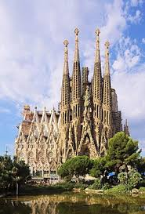
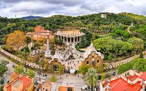

Barcelona

Barcelona to stolica Katalonii i drugie co do wielkości miasto Hiszpanii, położone nad Morzem Śródziemnym. Słynie z unikalnej architektury Antonia Gaudíego (Sagrada Família, Park Güell), Dzielnicy Gotyckiej, piaszczystych plaż oraz klubu piłkarskiego FC Barcelona. To tętniąca życiem metropolia łącząca kulturę, sztukę i kuchnię tapas.
Rzym
Sagrada Familia

Sagrada Família (Pełna nazwa: Basílica i Temple Expiatori de la Sagrada Família) to monumentalna bazylika w Barcelonie, uznawana za życiowe dzieło architekta Antoniego Gaudiego. Jest to jeden z najbardziej rozpoznawalnych symboli Hiszpanii i unikalny przykład modernizmu katalońskiego, łączący formy neogotyckie z organicznymi.
Camp Nou

Spotify Camp Nou to największy stadion piłkarski w Europie i jeden z najbardziej ikonicznych obiektów sportowych na świecie. Obecnie przechodzi historyczną transformację w ramach projektu Espai Barça, która ma uczynić go najnowocześniejszą areną na kontynencie.
Park Gue

Park Güell to jedna z najbardziej ikonicznych atrakcji Barcelony, zaprojektowana przez słynnego architekta Antoniego Gaudiego. Park, wybudowany w latach 1900–1914, pierwotnie miał być luksusowym osiedlem ogrodowym, jednak projekt nie odniósł sukcesu komercyjnego i ostatecznie stał się parkiem miejskim, który w 1984 roku wpisano na listę dziedzictwa UNESCO.
>